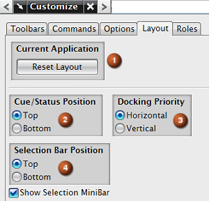

当前应用模块– 将所有内建的菜单栏及工具条恢复到初始默认状态，移除定制的工具条与菜单。
提示/状态位置– 此选项定义提示/状态条出现的位置。
停靠优先级– 此选项定义工具条的停靠位置方式。
选择条位置– 此选项决定选择条的出现位置。注意也有选项控制迷您选择条的显示与隐藏。
|
注释 |
记住，内建的工具条即那些不是由您创建的工具条内建也包括一些从 NX/Open 应用模块目录读取的菜单脚本文件和工具条(.tbr)描述文件，还有一些 NX/Open 目录中的本地或外来的 MTX 文件。 |
|
工具条 |
工具条选项按钮→添加或移除按钮→定制(布局选项卡) |
|
菜单 |
工具→定制→布局 |